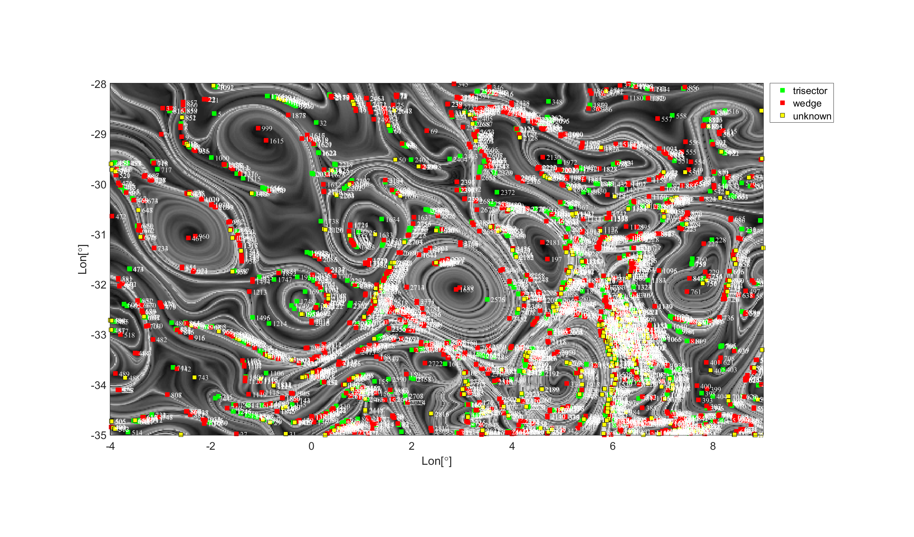
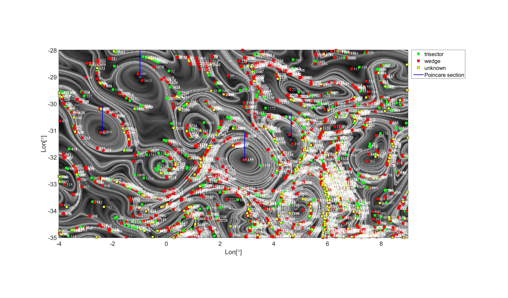
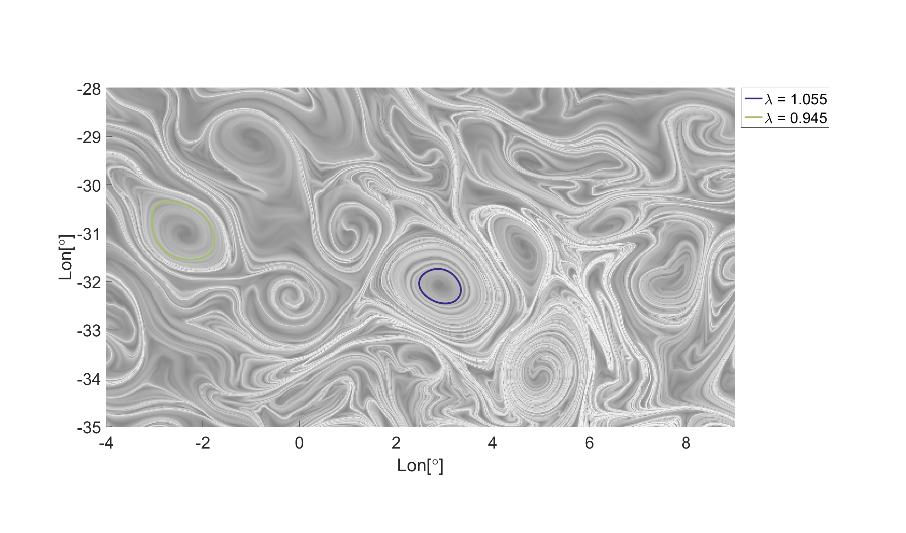

Contents
- Step0: Compute Cauchy-Green strain tensor and its invariants
- Step1: Locate singularities and thier types
- Step2: Identify elliptic regions based on index theory
- Step3: Set up Poincare sections for launching \lambda-lines
- Step4: Launch \lambda-lines
- Step5: Locating closed orbits of the \lambda vector fields.
- Step6:
- Step7: Locate and plot the outermost closed orbits as the Lagrangian eddy boundary
%%%%%%%%%%%%%%%%%%%%%%%%%%%%%%%%%%%%%%%%%%%%%%%%%%%%%%%%%%%%%%%%%%%%%%%%%%% % Author: Alireza hadjighasem % % Email: alirezah@ethz.ch % % Date: 30/10/2015 % %%%%%%%%%%%%%%%%%%%%%%%%%%%%%%%%%%%%%%%%%%%%%%%%%%%%%%%%%%%%%%%%%%%%%%%%%%% clear; clc; close all; tic load('Ocean_geostrophic_velocity.mat','date_str','time','Domain') % The altimeter products used in this work are produced by SSALTO/DUACS and % distributed by AVISO, with support from CNES (http://www.aviso.oceanobs.com/duacs).
Step0: Compute Cauchy-Green strain tensor and its invariants
t0 = time(1); tf = t0+90; tspan = linspace(t0,tf,3); % A vector specifying the interval of integration options = odeset('RelTol',1e-6,'AbsTol',1e-6); % ODE solver options memo1 = ['... Integration time is ',num2str(tf-t0),' days']; %- Generating a uniform grid of initial conditions n = 1.5*390; m = 1.5*210; x = linspace(-4,9,n); dx = abs(x(2)-x(1)); y = linspace(-35,-28,m); dy = abs(y(2)-y(1)); [xi,yi] = meshgrid(x,y); rho.x = 0.3*dx; rho.y = 0.3*dy; % \rho: auxiliary distance for computing the gradient of the flow map mode = 'parallel'; % Processor modes: "serial" OR "parallel" [lambda_1,lambda_2,xi1,xi2,C11,C12,C22] = cgTensor(xi,yi,tspan,rho,mode,options);
Step1: Locate singularities and thier types
Gfilter = false; % Gaussian Filter R = 1.8*min(dx,dy); % Radius of circular neighbourhood around each singularity PickTol = 1e-2; % Deviation tol. of peaks from 0 & 1 [Xs,Ys,SingularityType] = SingularityDetection(C11,C12,C22,x,y,xi1,Gfilter,R,PickTol);
... 2826 singularities are detected with the following types: .......... 1018 trisectors .......... 1375 wedges .......... 433 unknowns
Step2: Identify elliptic regions based on index theory
MinWedgeDist = 3*min(dx,dy); % Minimum permitable distance between a wedge pair MaxWedgeDist = 20*min(dx,dy); % Maximum permitable distance between a wedge pair Min2ndDist = 15*min(dx,dy); % Minimum permitable distance from the 2nd closest wedge [Xe,Ye] = DetectEllipticRegion(Xs,Ys,SingularityType,MinWedgeDist,MaxWedgeDist,Min2ndDist);
... 4 elliptic regions are identified
Step3: Set up Poincare sections for launching \lambda-lines
Np = 25; % Number of points on each Poincaré section PsectionRadius = 1; % Length of the Poincaré sections [Px,Py] = SettingPoincareSection(x,y,Xe,Ye,Np,PsectionRadius);
Step4: Launch \lambda-lines
mode = 'parallel'; % Processor modes: "serial" OR "parallel" sgn = 1; % Sign of the \lambda vector field: 1 OR -1 Nlambda = 20; % Number of \lambda-values thorugh which we search for closed orbits L_vec = linspace(0.85,1.15,Nlambda); % Vector of \lambda-values ArcLength = linspace(0,5,500); % parameterization of \lambda lines: linspace(0,arclength,NumPointsOnCurve) options = odeset('RelTol',1e-5,'AbsTol',1e-5); % ODE solver options rho = 0.5*min(cellfun(@(x) min(diff(x)),... % Auxiliary distance for finding the fixed points of the Poincaré map Py,'UniformOutput',true)); dist_tol = rho; % Maximum permitable distance between the two ends of a potentioal closed orbit px_mat = [cat(1,Px{:}),cat(1,Px{:})]; py_mat = [cat(1,Py{:})+rho,cat(1,Py{:})-rho]; pxt = cell(1,Nlambda); pyt = cell(1,Nlambda); for ii=1:Nlambda L = L_vec(ii); [pxt{ii},pyt{ii}] = LambdaLine(px_mat,py_mat,ArcLength,x,y,lambda_1,lambda_2,xi1,xi2,sgn,L,mode,options); end
Step5: Locating closed orbits of the \lambda vector fields.
Closed orbits pass through the fixed points of the Poincaré map
px0 = cell(1,Nlambda); py0 = cell(1,Nlambda); for ii=1:Nlambda [px0{ii},py0{ii}] = OrbitDetection(pxt{ii},pyt{ii},dist_tol); end
... 0 closed orbits detected ... 0 closed orbits detected ... 0 closed orbits detected ... 0 closed orbits detected ... 0 closed orbits detected ... 0 closed orbits detected ... 1 closed orbits detected ... 1 closed orbits detected ... 1 closed orbits detected ... 1 closed orbits detected ... 1 closed orbits detected ... 3 closed orbits detected ... 2 closed orbits detected ... 5 closed orbits detected ... 0 closed orbits detected ... 5 closed orbits detected ... 0 closed orbits detected ... 0 closed orbits detected ... 0 closed orbits detected ... 0 closed orbits detected
Step6:
pxt = cell(1,Nlambda); pyt = cell(1,Nlambda); for ii=1:Nlambda if ~isempty(px0{ii}) L = L_vec(ii); [pxt{ii},pyt{ii}] = LambdaLine(px0{ii},py0{ii},ArcLength,x,y,lambda_1,lambda_2,xi1,xi2,sgn,L,mode,options); end end
Step7: Locate and plot the outermost closed orbits as the Lagrangian eddy boundary
[sol_outer,sol] = Cropping_ExtractingOuter(x,y,lambda_2,pxt,pyt,Xe,Ye,L_vec); tt = toc;
... 20 closed orbits in total are detected